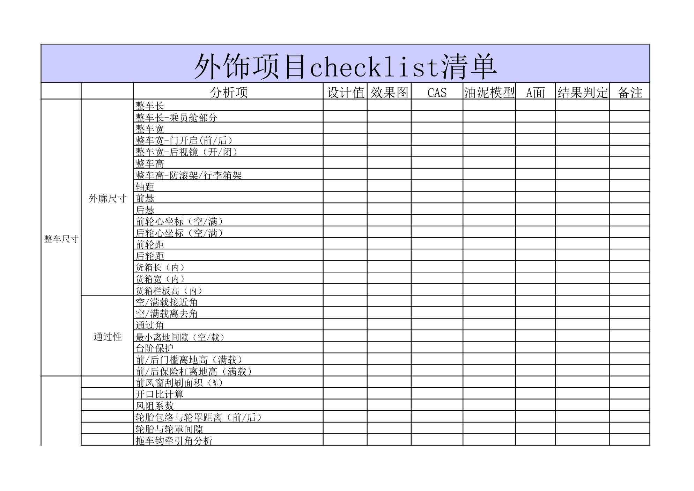

阶段交付物¶
内容来源
本页正文抽取自《总布置》知识库中**可文本解析**的文件：
SJ 41-2009 动力/底盘3D数据评审流程、SJ 45-2009 内饰SEG设计指导书、
SJ 40-2009 轿车外饰SEG分析断面设计指导书、SJ 46-2009 仪表板SEG分析设计指导书、
SJ 2-2008 车门设计指导书、SJ 4-2008 轿车车门主断面设计流程、
EDD-A0-005 外效果图可行性分析报告、EDD-A0-005-1/-2 内外造型总布置检查清单、
H20-整车总布置设计硬点报告。
企业规范编号原样保留。
交付物体系¶
flowchart LR
R["阶段交付物"]
R --> A["概念阶段"]
R --> B["设计阶段"]
R --> C["验证阶段"]
R --> D["交付物通用要求"]
A --> A1["造型控制要点"]
A --> A2["设计构想书"]
A --> A3["效果图可行性分析报告"]
A --> A4["BOM 与 DFMEA 清单"]
B --> B1["硬点报告"]
B --> B2["主断面与 SEG 断面"]
B --> B3["间隙段差圆角定义"]
B --> B4["评审准备文件 7 类"]
C --> C1["评审报告与整改记录"]
C --> C2["DMU 与 CAE 校核报告"]
C --> C3["维修手册与使用手册"]
D --> D1["三级签字"]
D --> D2["证据留痕"]
D --> D3["版本可追溯"]概述¶
要点¶
交付物的三种性质：
| 性质 | 说明 | 示例 |
|---|---|---|
| 结论类 | 回答"合格/不合格" | 效果图可行性分析报告、评审报告、DMU 校核报告 |
| 数据类 | 提供下游可直接引用的几何与参数 | 硬点报告、主断面、SEG 断面、BOM、间隙段差圆角定义 |
| 证据类 | 支撑结论的判断依据 | 检查清单（含"结论 + 图片示意"）、自检表、配接单、整改记录 |
交付物的通用要求（汇总各规范）：
| 要求 | 依据 |
|---|---|
| 三级签字 | 3D 数据自检表需由设计人员自检、主管领导校对、部门领导审核（SJ 41-2009 §3.2） |
| 证据留痕 | 检查清单须保留"结论 + 图片示意"（EDD-A0-005-1/-2） |
| 版本可追溯 | 硬点报告"初稿 → 冻结正式发布"，中间版本必须可追溯（H20 硬点报告） |
| 整改闭环后交付 | 评审问题须填写《整改记录》，**合格后**交付数据（SJ 41-2009 §6.3） |
示例¶
外效果图可行性分析报告是一份典型的"结论类 + 数据类"复合交付物：它既有合格的结论（第 5 章），也包含四类视图的逐项数据校核记录（第 4 章），其输入明确为**外效果图（含前后轴视图）、效果图阶段总布置图、整车配置表**三项。
注意事项¶
- 交付物评审要求：
SJ 41-2009明确评审前**三天**需将准备文件放服务器，且评审报告 PPT 也需**提前三天完成**——交付物的"评审准备"本身有独立的时间约束； - 交付物不是"本专业自嗨"：配接单与管线布置校核报告的存在说明交付物必须包含**跨专业接口确认**。
概念阶段交付物¶
要点¶
（1）前期分析阶段交付物（SJ 2-2008 §4.2，以车门为例）
| 交付物 | 内容 |
|---|---|
| 造型控制要点 | 依据设计要求与设计目标，对效果图设计有明确限制或要求的地方制作造型控制要点，及时给造型设计以输入 |
| 设计构想书 | 依据设计要求与效果图制作初步的设计构想书 |
| 零件清单 | 新开发车型与参考样车零件的**名称、图号、材料、料厚、面积、重量** |
（2）设计构想书的内容结构（SJ 45-2009 §6.2）
| 方面 | 内容 |
|---|---|
| 整体规划 | 针对**舒适性、美观性、人机、成本、装配**提出目标构想及具体方案；针对标杆车提出**借用与改进措施** |
| 总成结构规划 | 一般以**爆炸图**形式，体现总成的零件数量、标准件数量、材料、料厚以及各总成的装配关系 |
设计构想书是**动态文件**，随设计推进不断完善并更新，作为后续数据库文件。
（3）SEG 阶段同步建立的技术文件（SJ 45-2009 §6）
| 文件 | 关键内容 |
|---|---|
| BOM 表 | 除按 Q/IAT·TY 02 外需添加：零部件**开发状态**（完全借用 / 局部更改 / 全新开发）、互换性（通用 / 对称）、材料信息（规格与料厚）、重量与质心（便于总布置和 CAE 计算整车性能）；随设计更新而不断更新 |
| 间隙、段差、圆角定义 | 效果图冻结后定义**外观可见特征**的内饰间隙/段差/圆角；参考标杆车并考虑材料、制造工艺、装配、相对运动关系；经造型师确认后发布 |
| DFMEA 分析文件 | 确定内饰 DFMEA 清单；调研与资料收集；对零件进行边界和功能分析（详见 Q/IAT·TY 17-2009） |
（4）效果图阶段交付物
| 交付物 | 说明 |
|---|---|
外效果图可行性分析报告（EDD-A0-005） |
结构：1 基本信息 / 2 目的 / 3 输入 / 4 校核过程（质量检查、侧视图、正视图、后视图）/ 5 结论 |
内效果图可行性分析报告（EDD-A0-006） |
同上结构（本页未展开） |
外造型总布置检查清单（EDD-A0-005-1） |
零部件信息完整性、整车尺寸、通过性、人机、法规功能要求、外形尺寸、功能法规校核、沿用件/借用件 |
内造型总布置检查清单（EDD-A0-005-2） |
配置检查、法规项检查、进出方便性、乘坐舒适性、操纵舒适性、人机项检查、系统布置可行性 |
效果图总布置检查结论（QCD-A0-006） |
完整性/外廓/内部/主要配置四类检查 |
示例¶
外造型总布置检查清单的列结构体现了"工作项 = 验收记录"的设计：
分析项 / 设计值 / 效果图 / CAS / 油泥模型 / A面 / 结果判定 / 备注
其分析项覆盖：整车尺寸（整车长、整车长-乘员舱部分、整车宽、整车宽-门开启、整车宽-后视镜开闭、整车高、整车高-防滚架/行李箱架、轴距、前悬、后悬、前后轮心坐标、前后轮距、货箱尺寸）、通过性（空/满载接近角与离去角、通过角、最小离地间隙、台阶保护、前后门槛离地高、前后保险杠离地高、前风窗刮刷面积、开口比计算、风阻系数、轮胎包络与轮罩距离、拖车钩牵引角）、法规功能相关尺寸（前/后低速碰撞全套、牌照板、灯具）、人机舒适性相关尺寸（外开手柄、引擎盖开启、后背门开启、燃油加注、上车踏板、360° 视野盲区、交通灯视野）、视野分析（前后上下视野、侧门玻璃视野、A 柱障碍角、备胎取放方便性）。

注意事项¶
- 交付物评审要求：检查清单本身即评审依据，
EDD清单备注明确"以上校核内容仅供参考，根据具体项目增加或者减少相关校核项；法规校核项不同车型可能有较大差异"； - 重量与质心必须进 BOM：这是 SEG 阶段最容易被简化掉的一项，但它直接影响整车动力性与经济性计算。
设计阶段交付物¶
要点¶
（1）总布置主线交付物（H20 硬点报告、SJ 46-2009）
| 交付物 | 内容 |
|---|---|
| 《整车总布置设计硬点报告》 | 目录结构：1 概述 / 2 整车设计基准（2.1 整车坐标系、2.2 整车设计状态）/ 3 整车设计硬点（3.1 整车装备选型、3.2 发动机参数、3.3 底盘系统布置主要硬点、3.4 整车性能、3.5 整车质量相关参数、3.6 整车外廓尺寸参数、3.7 车身主要总成控制硬点、3.8 人机工程布置设计硬点）/ 4 结束语 |
| 主断面清单与断面 | 车门主断面清单（数量、位置、方位、表达内容、排列顺序）+ 3D/2D 断面 |
| SEG 断面 | 外饰 35～40 个、仪表板约 30 个、内饰分总成断面；含**断面面积、转动惯量**参数 |
| SEG 检查表 | SEG 分析项的检查清单（SJ 40-2009 §4 列出为 SEG 输出物之一） |
| 分析数据 | 开闭件布置数据、前后轮口校核、顶盖前后分缝线范围 |
（2）评审准备文件（7 类）（SJ 41-2009 §5）
| # | 文件 | 填写/编制责任人 | 格式依据 |
|---|---|---|---|
| 1 | 评审报告 PPT | 底盘/动力系统项目负责人；评审前三天完成 | 附录 A（11 页结构） |
| 2 | 3D 数据自检表 | 系统负责人填写，**纸版三级签字**后交项目负责人整理备案 | 《3D 数据检查规范》 |
| 3 | 底盘/动力系统配接单 | 各系统负责人填写，纸版各级签字确认 | Q/IAT·CZ 1 |
| 4 | 管线布置校核报告 | 底盘部性能控制科室相关责任人 | Q/IAT·SJ 31 |
| 5 | 动力/底盘动态检查报告 | 底盘部性能控制科室相关责任人 | Q/IAT·JY 2 |
| 6 | 3D 数据整改开闭项清单 | 性能控制科室相关责任人；跟踪各检查报告中调整内容是否已完成修改 | — |
| 7 | 设计和开发评审申请表 | 项目负责人 | Q/IAT·TY 14-2008 |
（3）评审报告 PPT 的 11 页结构（SJ 41-2009 附录 A）
封面 → 概要 → 设计定义 → 基本配置介绍 → 进度介绍 → 评审资料介绍 → 配接单汇总统计 → 自检表汇总统计 → 管线布置校核报告统计 → 动态检查结果统计 → 结束。
（4）设计阶段还应编制
| 交付物 | 依据 |
|---|---|
| 维修手册、使用手册等产品文件 | SJ 2-2008 §4.5.6 |
| 装配模拟结论（安装拆卸可行性） | SJ 18-2008、SJ 19-2008、SJ 21-2008 等要求进行安装模拟 |
示例¶
评审报告 PPT 的 11 页结构本身就是"交付物完整性检查表"——第 7～10 页分别对应配接单、自检表、管线布置校核、动态检查四类检查结果的汇总统计，说明**评审不是看单一报告，而是看四类检查的结果统计**。
注意事项¶
- 交付物版本管理：硬点报告"初稿 → 冻结正式发布"、BOM 与设计构想书"随设计更新不断更新"——不同交付物的版本策略不同，设计构想书与 BOM 是持续演进的，硬点报告是阶段冻结的；
- 纸版签字与电子版汇总并存：自检表与配接单均要求纸版签字确认 + 电子版汇总存放服务器，这是"责任可追溯"的双保险。
验证阶段交付物¶
要点¶
（1）评审与整改类（SJ 41-2009 §6）
| 交付物 | 内容 |
|---|---|
| 《评审报告》 | 评审会上由专人记录专家提出的问题 |
| 《整改记录》 | 会后由专人整理评审中的问题；**合格后**进行数据的交付 |
（2）校核报告类
| 交付物 | 内容 | 依据 |
|---|---|---|
| DMU 间隙/干涉校核报告 | 间隙与干涉校核结论（对应规范未采用，见待补充） | AEM-A0-009/011 |
| 管线布置校核报告 | 动力/底盘系统管路布置合理性分析 | SJ 31-2009（格式） |
| 动力/底盘动态检查报告 | 运动件合理性分析 | SJ 41-2009 §3.4 |
| 结构 CAE 报告 | 刚度、模态、门下垂、碰撞、抗凹性分析 | SJ 2-2008 §4.4.2 |
| 碰撞 CAE 与试验报告 | 正碰、侧碰、追尾、低速正碰、翻滚压顶 | SJ 4-2008 §3、SJ 54-2009 |
| 强度与耐久试验报告 | 过行程强度、向下加载、全力关门、5 万次开合耐久 | SJ 2-2008 §5.2 |
（3）冻结与归档类
| 交付物 | 说明 |
|---|---|
| 冻结版硬点报告 | 项目完成冻结时正式发布 |
| 最终主断面 | 经"新车型主断面评审 → 三维结构设计评审 → 主断面完善"后形成 |
| 问题清单（试制/试验/试生产） | 各阶段问题整理分析记录 |
| 维修手册、使用手册 | SJ 2-2008 §4.5.6 要求编制 |
（4）问题清单的固定格式（EDD 清单与 SJ 41-2009 共同约定）
问题清单应包含：问题描述 + 所属部位/视图 + 结论 + 图片示意，并跟踪"整改是否已完成"（开闭项清单）。
示例¶
验证阶段交付物的最小闭环是：问题清单（含图片示意）→ 整改记录 → 复算/复验 → 冻结。SJ 41-2009 的"3D 数据整改开闭项清单"正是这一闭环的跟踪载体——它的作用不是记录问题，而是**跟踪"调整内容是否已经完成修改"**。
注意事项¶
- 交付物归档要求属待人工补充项：已解析条款未见交付物的归档介质、保存期限与权限管理规定；
- "合格后交付"是硬约束：
SJ 41-2009与各检查清单都把"整改闭环"作为交付前置条件， 这意味着**交付物的完整性不仅看清单是否齐全，还要看问题是否关闭**； - 手册类交付物常被遗漏：
SJ 2-2008§4.5.6 明确把"编制相关部分的维修手册、使用手册等产品文件"列为设计阶段工作内容， 这部分在数据冻结后容易被忽略。
待人工补充¶
本页待人工补充清单
- 交付物归档要求（介质、保存期限、权限管理）；
EDD-A0-006 内效果图可行性分析报告（12 页，已下载）的完整结构与本页仅给出类推结构；- DMU 校核报告的判据与格式：对应
AEM-A0-009 DMU数据检查手册、AEM-A0-011 DMU数据间隙设定规范， 因读取问题**未采用**； - **
Q/IAT·CZ 1配接单、Q/IAT·JY 2动态检查报告、Q/IAT·SJ 31管线布置校核报告**的具体格式文件 不在《总布置》知识库中（本页仅引用其编号）； - 硬点报告的正文章节内容：H20 硬点报告为
.docx，本页仅提取其**目录结构**， 各章节的具体硬点数值未展开（可另行解析该文件）； - 知识库中以下文件虽相关但因读取问题**未采用**：
AEM-A0-002 设计任务书、AEM-A0-200 总布置图绘制规范、40《总布置图设计规范》.xlsx。
建议：在 IMA 客户端中打开对应文件补充条款，或按"规范编号 + 页码"方式人工引用。